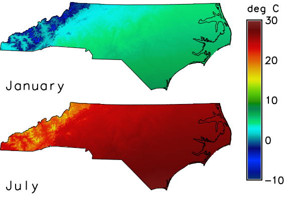

grey, therefore stretches over the combined range of all maps of the dataset,
and all maps get the same rules. See the
introduction to temporal data processing for space time
datasets.
The option input names the space time raster dataset. Every registered map is handled; there is no option to select maps. The source of the colors is exactly one of the following; the flags -r and -l need none:
grey or
viridis. A table that is defined for a fixed range of values, such as
celsius (-80 to 80), keeps this range; a table without a fixed range is
stretched over the range of the values of all maps.0 blue. The value
- reads the rules from the standard input.A table that a map has is replaced by the new one; --overwrite is not needed.
The flags change how the table is made or what is done with it:
<raster>, <raster_3d>,
<color>, <rules>, <-r>, <-l> and <-d>" and t.rast.colors adds
"Error in r.colors call". More than one source is refused with "Options
<color>, <rules>, <raster> and <raster_3d> are mutually exclusive".
An unknown name in color is refused by the parser ("Value
<nosuchtable> out of range for parameter <color>"), and the maps keep their
tables. A missing file in rules stops with "Unable to load rules file"
and the path; an unknown map in raster stops with "Error in r.colors
call".
A dataset without maps is left alone, without a message.
Datasets with absolute and with relative time are handled in the same way; the last example uses relative time.
For a dataset of another mapset (input=temperature_monthly@t_rast_colors),
r.colors writes the tables to the current mapset, where they take
precedence over the tables of the maps for as long as this mapset is the
current one. The maps in their own mapset are not changed, as the last example
shows.
nc_spm_08_grass7 from
the GRASS sample data. The first
example creates the mapset t_rast_colors and sets the computational region
to North Carolina with cells of 1 km; the later examples work in this mapset
and region, except the last, which creates a second mapset with the same
region. The color tables are written only to the maps of this mapset, never to
the maps of the sample dataset.
temperature_monthly holds twelve maps of the monthly mean air
temperature in 2020, in degrees Celsius rounded to tenths. They are generated
from the elevation model elev_state_500m: 16.5 degrees at sea level and the
northing 160 km, an annual cycle of plus and minus 10.5 degrees with its
maximum in July, 6.5 degrees less for every 1000 m of elevation, and 1 degree
more for every 100 km to the south. The smallest value of all maps is -7.0
degrees, the largest 28.4 degrees.
With color grey, all maps get a table from black at the smallest value
of the dataset to white at the largest one, not one for the range of each map:
the first block prints the table of the January map and of the July map, which
is the same. The lines nv and default are the colors of null cells and of
values outside the table. A table with a fixed range keeps it: celsius runs
from -80 to 80, so the second block prints only the rules for -80 and 80 of
the table of the January map.
Command line:
g.mapset -c mapset=t_rast_colors
g.region raster=elev_state_500m res=1000 -a
for month in $(seq 12); do
echo "temperature_monthly_2020_$(printf %02d $month) = round((16.5" \
"+ 10.5 * cos(30 * ($month - 7.2)) - 0.0065 * elev_state_500m" \
"- 0.00001 * (y() - 160000)) * 10) / 10.0"
done | r.mapcalc file=-
t.create output=temperature_monthly title="Air temperature" \
description="Monthly mean air temperature 2020 in degree Celsius"
t.register -i input=temperature_monthly \
maps=$(g.list type=raster pattern="temperature_monthly_*" mapset=. separator=comma) \
start=2020-01-01 increment="1 month"
t.rast.colors input=temperature_monthly color=grey r.colors.out map=temperature_monthly_2020_01 r.colors.out map=temperature_monthly_2020_07
-7 0:0:0 28.4 255:255:255 nv 255:255:255 default 255:255:255 -7 0:0:0 28.4 255:255:255 nv 255:255:255 default 255:255:255
t.rast.colors input=temperature_monthly color=celsius r.colors.out map=temperature_monthly_2020_01 | grep -E "^(-80|80) "
-80 0:0:40 80 155:10:155
Python (grass.tools):
from grass.tools import Tools
tools = Tools()
tools.g_mapset(flags="c", mapset="t_rast_colors")
tools.g_region(raster="elev_state_500m", res=1000, flags="a")
months = range(1, 13)
tools.r_mapcalc(
expression="\n".join(
f"temperature_monthly_2020_{month:02d} = round((16.5"
f" + 10.5 * cos(30 * ({month} - 7.2)) - 0.0065 * elev_state_500m"
" - 0.00001 * (y() - 160000)) * 10) / 10.0"
for month in months
)
)
tools.t_create(
output="temperature_monthly",
title="Air temperature",
description="Monthly mean air temperature 2020 in degree Celsius",
)
tools.t_register(
input="temperature_monthly",
maps=",".join(f"temperature_monthly_2020_{month:02d}" for month in months),
start="2020-01-01",
increment="1 month",
flags="i",
)
tools.t_rast_colors(input="temperature_monthly", color="grey") print(tools.r_colors_out(map="temperature_monthly_2020_01").text) print(tools.r_colors_out(map="temperature_monthly_2020_07").text)
-7 0:0:0 28.4 255:255:255 nv 255:255:255 default 255:255:255 -7 0:0:0 28.4 255:255:255 nv 255:255:255 default 255:255:255
tools.t_rast_colors(input="temperature_monthly", color="celsius")
for line in tools.r_colors_out(map="temperature_monthly_2020_01").text.splitlines():
if line.split()[0] in ("-80", "80"):
print(line)
-80 0:0:40 80 155:10:155
celsius from the
previous example. Because all maps of the dataset have this one table, the
same color means the same temperature in both maps, and the legend holds for
both. d.frame makes one frame per map, d.rast draws the map, d.vect the
border from the vector map nc_state and d.text the name; d.legend draws
the legend in a frame of its own.
Command line:
d.mon start=cairo output=t_rast_colors_common.png width=600 height=400
row=0
for map in "temperature_monthly_2020_01 January" \
"temperature_monthly_2020_07 July"; do
set -- $map
top=$((100 - 50 * row))
d.frame -c frame=map_$row at=$((top - 50)),$top,0,80
d.rast map=$1
d.vect map=nc_state type=boundary color=black
d.text text=$2 at=2,8 size=14 color=black
row=$((row + 1))
done
d.frame -c frame=legend at=0,100,80,100
d.legend raster=temperature_monthly_2020_07 range=-10,30 at=10,90,10,35 \
label_step=10 digits=0 title="deg C"
d.mon stop=cairo
Python (grass.tools):
tools.d_mon(start="cairo", output="t_rast_colors_common.png", width=600, height=400)
for row, (name, label) in enumerate(
(
("temperature_monthly_2020_01", "January"),
("temperature_monthly_2020_07", "July"),
)
):
top = 100 - 50 * row
tools.d_frame(flags="c", frame=f"map_{row}", at=[top - 50, top, 0, 80])
tools.d_rast(map=name)
tools.d_vect(map="nc_state", type="boundary", color="black")
tools.d_text(text=label, at=[2, 8], size=14, color="black")
tools.d_frame(flags="c", frame="legend", at=[0, 100, 80, 100])
tools.d_legend(
raster="temperature_monthly_2020_07",
range=[-10, 30],
at=[10, 90, 10, 35],
label_step=10,
digits=0,
title="deg C",
)
tools.d_mon(stop="cairo")

Figure: Mean air temperature of January and July 2020 with one color table.
-5 blue and 25 red give a table from blue at -5 degrees to red
at 25 degrees. The first block reads them from the standard input (rules=-;
in Python a StringIO object does this) and prints the table of the January
map; the second block asks r.what.color for the colors of the values -5
and 25.
With -n, the table has the same two rules, as the third block shows, but the colors of the values are the other way round: -5 is red and 25 blue.
Command line:
t.rast.colors input=temperature_monthly rules=- <<EOF -5 blue 25 red EOF r.colors.out map=temperature_monthly_2020_01
-5 0:0:255 25 255:0:0 nv 255:255:255 default 255:255:255
r.what.color input=temperature_monthly_2020_01 value=-5,25 format="%d:%d:%d"
-5: 0:0:255 25: 255:0:0
t.rast.colors -n input=temperature_monthly rules=- <<EOF -5 blue 25 red EOF r.colors.out map=temperature_monthly_2020_01 r.what.color input=temperature_monthly_2020_01 value=-5,25 format="%d:%d:%d"
-5 0:0:255 25 255:0:0 nv 255:255:255 default 255:255:255 -5: 255:0:0 25: 0:0:255
Python (grass.tools):
from io import StringIO rules = "-5 blue\n25 red\n" tools.t_rast_colors(input="temperature_monthly", rules=StringIO(rules)) print(tools.r_colors_out(map="temperature_monthly_2020_01").text)
-5 0:0:255 25 255:0:0 nv 255:255:255 default 255:255:255
print(
tools.r_what_color(
input="temperature_monthly_2020_01", value=[-5, 25], format="%d:%d:%d"
).text
)
-5: 0:0:255 25: 255:0:0
tools.t_rast_colors(input="temperature_monthly", rules=StringIO(rules), flags="n")
print(tools.r_colors_out(map="temperature_monthly_2020_01").text)
print(
tools.r_what_color(
input="temperature_monthly_2020_01", value=[-5, 25], format="%d:%d:%d"
).text
)
-5 0:0:255 25 255:0:0 nv 255:255:255 default 255:255:255 -5: 255:0:0 25: 0:0:255
precipitation_monthly holds twelve maps of the monthly
precipitation sum in 2020 in whole millimetres. They are generated, not
measured: the monthly normal of the climate stations of precip_30ynormals
(the columns jan to dec), interpolated with v.surf.idw, times an assumed
factor for each month of a wet year. The smallest value of all maps is 55 mm,
the largest 350 mm. The rules 55 red and 350 blue are used for the scaling
with the logarithm, which needs positive values.
The colors of the values 55, 100, 200 and 350 are printed by r.what.color
with the linear table, with -g and with -a. The linear table puts 100
at 45 / 295 = 0.15 of the way from red to blue, so it is still nearly red
(217:0:38). With the logarithmic scale 100 lies at ln(100 / 55) / ln(350 / 55)
= 0.32 of the way (174:0:81), and 200 at 0.70 (78:0:177) instead of 0.49.
-g and -a give the same colors for positive values; they differ for
negative values, as the next example shows.
With -e and color=grey, the colors are spread by the frequency of the
cells, not by the values: the smallest values are rare, so the first rules of
the table of the January map, printed by the last block, go from black at 55 mm
to only 3:3:3 at 73 mm, and most of the grey steps are used for the frequent
values in between.
Command line:
month=1
for entry in jan:1.2 feb:1.7 mar:0.9 apr:1.3 may:1.6 jun:0.9 \
jul:1.1 aug:1.5 sep:0.8 oct:1.0 nov:1.6 dec:0.9; do
name=$(printf %02d $month)
v.surf.idw input=precip_30ynormals column=${entry%:*} \
output=precipitation_normal_$name npoints=12 power=2
r.mapcalc expression="precipitation_monthly_2020_$name = if(isnull(elev_state_500m), null(), round(${entry#*:} * precipitation_normal_$name))"
month=$((month + 1))
done
t.create output=precipitation_monthly title="Precipitation" \
description="Monthly precipitation sum 2020 in mm"
t.register -i input=precipitation_monthly \
maps=$(g.list type=raster pattern="precipitation_monthly_*" mapset=. separator=comma) \
start=2020-01-01 increment="1 month"
t.rast.colors input=precipitation_monthly rules=- <<EOF
55 red
350 blue
EOF
r.what.color input=precipitation_monthly_2020_01 value=55,100,200,350 \
format="%d:%d:%d"
55: 255:0:0 100: 217:0:38 200: 130:0:125 350: 0:0:255
t.rast.colors -g input=precipitation_monthly rules=- <<EOF
55 red
350 blue
EOF
r.what.color input=precipitation_monthly_2020_01 value=55,100,200,350 \
format="%d:%d:%d"
55: 255:0:0 100: 174:0:81 200: 78:0:177 350: 0:0:255
t.rast.colors -a input=precipitation_monthly rules=- <<EOF
55 red
350 blue
EOF
r.what.color input=precipitation_monthly_2020_01 value=55,100,200,350 \
format="%d:%d:%d"
55: 255:0:0 100: 174:0:81 200: 78:0:177 350: 0:0:255
t.rast.colors -e input=precipitation_monthly color=grey r.colors.out map=precipitation_monthly_2020_01 | sed -n 1,3p
55 0:0:0 72 1:1:1 73 3:3:3
Python (grass.tools):
factors = {"jan": 1.2, "feb": 1.7, "mar": 0.9, "apr": 1.3, "may": 1.6, "jun": 0.9}
factors |= {"jul": 1.1, "aug": 1.5, "sep": 0.8, "oct": 1.0, "nov": 1.6, "dec": 0.9}
for month, (column, factor) in enumerate(factors.items(), start=1):
normal = f"precipitation_normal_{month:02d}"
tools.v_surf_idw(
input="precip_30ynormals", column=column, output=normal, npoints=12, power=2
)
tools.r_mapcalc(
expression=f"precipitation_monthly_2020_{month:02d} ="
f" if(isnull(elev_state_500m), null(), round({factor} * {normal}))"
)
tools.t_create(
output="precipitation_monthly",
title="Precipitation",
description="Monthly precipitation sum 2020 in mm",
)
tools.t_register(
input="precipitation_monthly",
maps=",".join(f"precipitation_monthly_2020_{month:02d}" for month in months),
start="2020-01-01",
increment="1 month",
flags="i",
)
rules = "55 red\n350 blue\n"
tools.t_rast_colors(input="precipitation_monthly", rules=StringIO(rules))
print(
tools.r_what_color(
input="precipitation_monthly_2020_01",
value=[55, 100, 200, 350],
format="%d:%d:%d",
).text
)
55: 255:0:0 100: 217:0:38 200: 130:0:125 350: 0:0:255
tools.t_rast_colors(input="precipitation_monthly", rules=StringIO(rules), flags="g")
print(
tools.r_what_color(
input="precipitation_monthly_2020_01",
value=[55, 100, 200, 350],
format="%d:%d:%d",
).text
)
55: 255:0:0 100: 174:0:81 200: 78:0:177 350: 0:0:255
tools.t_rast_colors(input="precipitation_monthly", rules=StringIO(rules), flags="a")
print(
tools.r_what_color(
input="precipitation_monthly_2020_01",
value=[55, 100, 200, 350],
format="%d:%d:%d",
).text
)
55: 255:0:0 100: 174:0:81 200: 78:0:177 350: 0:0:255
tools.t_rast_colors(input="precipitation_monthly", color="grey", flags="e")
colors = tools.r_colors_out(map="precipitation_monthly_2020_01").text
print("\n".join(colors.splitlines()[:3]))
55 0:0:0 72 1:1:1 73 3:3:3
1 blue and 28 red cover the
positive range. With -g, the logarithm needs positive values, so a negative
value is outside the table and r.what.color prints * instead of a color.
With -a, a negative value gets the color of its absolute value, within the
steps of the table: 123:0:132 for -5 against 122:0:133 for 5. The blocks print
the colors of the values -5 and 5 with both flags.
Command line:
t.rast.colors -g input=temperature_monthly rules=- <<EOF 1 blue 28 red EOF r.what.color input=temperature_monthly_2020_01 value=-5,5 format="%d:%d:%d"
-5: * 5: 122:0:133
t.rast.colors -a input=temperature_monthly rules=- <<EOF 1 blue 28 red EOF r.what.color input=temperature_monthly_2020_01 value=-5,5 format="%d:%d:%d"
-5: 123:0:132 5: 122:0:133
Python (grass.tools):
rules = "1 blue\n28 red\n"
tools.t_rast_colors(input="temperature_monthly", rules=StringIO(rules), flags="g")
print(
tools.r_what_color(
input="temperature_monthly_2020_01", value=[-5, 5], format="%d:%d:%d"
).text
)
-5: * 5: 122:0:133
tools.t_rast_colors(input="temperature_monthly", rules=StringIO(rules), flags="a")
print(
tools.r_what_color(
input="temperature_monthly_2020_01", value=[-5, 5], format="%d:%d:%d"
).text
)
-5: 123:0:132 5: 122:0:133
color_source_2d has the rules 0 white and 200 blue; raster copies
them to the maps of precipitation_monthly. The 3D map color_source_3d has
the rules 0 yellow and 400 green; raster_3d copies them. Only the color
table of these two maps is used, their values do not matter. The 3D map needs a
region with a vertical extent, which the first command of the second block
adds to the region.
Command line:
r.mapcalc expression="color_source_2d = 100" r.colors map=color_source_2d rules=- <<EOF 0 white 200 blue EOF t.rast.colors input=precipitation_monthly raster=color_source_2d r.colors.out map=precipitation_monthly_2020_01
0 255:255:255 200 0:0:255 nv 255:255:255 default 255:255:255
g.region t=1 b=0 res3=1000 tbres=1 r3.mapcalc expression="color_source_3d = 5.0" r3.colors map=color_source_3d rules=- <<EOF 0 yellow 400 green EOF t.rast.colors input=precipitation_monthly raster_3d=color_source_3d r.colors.out map=precipitation_monthly_2020_01
0 255:255:0 400 0:255:0 nv 255:255:255 default 255:255:255
Python (grass.tools):
tools.r_mapcalc(expression="color_source_2d = 100")
tools.r_colors(map="color_source_2d", rules=StringIO("0 white\n200 blue\n"))
tools.t_rast_colors(input="precipitation_monthly", raster="color_source_2d")
print(tools.r_colors_out(map="precipitation_monthly_2020_01").text)
0 255:255:255 200 0:0:255 nv 255:255:255 default 255:255:255
tools.g_region(t=1, b=0, res3=1000, tbres=1)
tools.r3_mapcalc(expression="color_source_3d = 5.0")
tools.r3_colors(map="color_source_3d", rules=StringIO("0 yellow\n400 green\n"))
tools.t_rast_colors(input="precipitation_monthly", raster_3d="color_source_3d")
print(tools.r_colors_out(map="precipitation_monthly_2020_01").text)
0 255:255:0 400 0:255:0 nv 255:255:255 default 255:255:255
precipitation_monthly_2021_01 has no color table. It is
registered in the dataset, which now has thirteen maps; the other twelve have
the table of the previous example. With -w, only the new map gets the
table grey, and it is computed from its own range of values and not from the
range of the dataset. The first block prints the table of the new map; the
second shows that the January map of 2020 keeps the rules of the previous
example.
Command line:
r.mapcalc expression="precipitation_monthly_2021_01 = round(0.5 * precipitation_normal_01)"
t.register input=precipitation_monthly maps=precipitation_monthly_2021_01 \
start=2021-01-01 end=2021-02-01
t.rast.colors -w input=precipitation_monthly color=grey
r.colors.out map=precipitation_monthly_2021_01
39 0:0:0 104 255:255:255 nv 255:255:255 default 255:255:255
r.colors.out map=precipitation_monthly_2020_01
0 255:255:0 400 0:255:0 nv 255:255:255 default 255:255:255
Python (grass.tools):
tools.r_mapcalc(
expression="precipitation_monthly_2021_01 = round(0.5 * precipitation_normal_01)"
)
tools.t_register(
input="precipitation_monthly",
maps="precipitation_monthly_2021_01",
start="2021-01-01",
end="2021-02-01",
)
tools.t_rast_colors(input="precipitation_monthly", color="grey", flags="w")
print(tools.r_colors_out(map="precipitation_monthly_2021_01").text)
39 0:0:0 104 255:255:255 nv 255:255:255 default 255:255:255
print(tools.r_colors_out(map="precipitation_monthly_2020_01").text)
0 255:255:0 400 0:255:0 nv 255:255:255 default 255:255:255
Command line:
t.rast.colors -l input=temperature_monthly | grep -x -E "grey|viridis"
grey viridis
t.rast.colors -r input=temperature_monthly r.colors.out map=temperature_monthly_2020_01 | grep -E "^(-7|7.5) "
-7 68:1:84 7.5 253:231:37
Python (grass.tools):
for line in tools.t_rast_colors(
input="temperature_monthly", flags="l"
).text.splitlines():
if line in ("grey", "viridis"):
print(line)
grey viridis
tools.t_rast_colors(input="temperature_monthly", flags="r")
for line in tools.r_colors_out(map="temperature_monthly_2020_01").text.splitlines():
if line.split()[0] in ("-7", "7.5"):
print(line)
-7 68:1:84 7.5 253:231:37
model has relative time and lies in the mapset t_rast_colors.
Its maps step_1 and step_2 have the values 1 to 3 and 2 to 6. The example
creates the mapset t_rast_colors_2 with the same region, adds
t_rast_colors to the search path, so that its datasets can be read, and
colors model; the dataset is named with its mapset. The tables are written
to t_rast_colors_2: the first block prints the table of
step_1@t_rast_colors there, the grey table for the range 1 to 6 of the
dataset; the second block prints the rules for 1 and 3 after switching back to
t_rast_colors, where the map has the default table for its own range, 1 to
3. The maps in t_rast_colors are not changed.
Command line:
r.mapcalc expression="step_1 = 1 + int(col() / 280)"
r.mapcalc expression="step_2 = step_1 * 2"
t.create output=model temporaltype=relative title="Model" \
description="Model output per step"
t.register -i input=model maps=step_1,step_2 start=0 increment=1 unit=hours
g.mapset -c mapset=t_rast_colors_2
g.region raster=elev_state_500m res=1000 -a
g.mapsets mapset=t_rast_colors operation=add
t.rast.colors input=model@t_rast_colors color=grey
r.colors.out map=step_1@t_rast_colors
1 0:0:0 6 255:255:255 nv 255:255:255 default 255:255:255
g.mapset mapset=t_rast_colors r.colors.out map=step_1 | grep -E "^(1|3) "
1 68:1:84 3 253:231:37
Python (grass.tools):
tools.r_mapcalc(expression="step_1 = 1 + int(col() / 280)")
tools.r_mapcalc(expression="step_2 = step_1 * 2")
tools.t_create(
output="model",
temporaltype="relative",
title="Model",
description="Model output per step",
)
tools.t_register(
input="model", maps="step_1,step_2", start=0, increment=1, unit="hours", flags="i"
)
tools.g_mapset(mapset="t_rast_colors_2", flags="c")
tools.g_region(raster="elev_state_500m", res=1000, flags="a")
tools.g_mapsets(mapset="t_rast_colors", operation="add")
tools.t_rast_colors(input="model@t_rast_colors", color="grey")
print(tools.r_colors_out(map="step_1@t_rast_colors").text)
1 0:0:0 6 255:255:255 nv 255:255:255 default 255:255:255
tools.g_mapset(mapset="t_rast_colors")
for line in tools.r_colors_out(map="step_1").text.splitlines():
if line.split()[0] in ("1", "3"):
print(line)
1 68:1:84 3 253:231:37